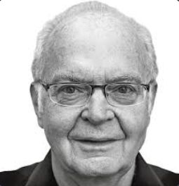
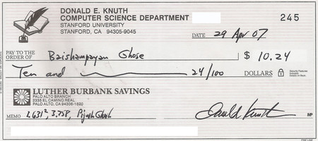
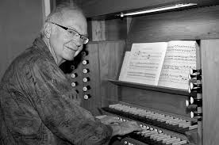

<!DOCTYPE html>
<html></html>  <head>
    <meta charset="utf-8"/>
    <title>Donald knuth</title>
    <body style="background-color:powderblue;"></body>
    <link rel="stylesheet" href="estilos.css">
    <style>
          body{
            font-family: sans-serif;
        }
        .contenedor{
            background-color: antiquewhite;
            height: 200vh;
            margin: 1%;
            
        }
    </style>
</head>
<body>
 <header>
    <div class="logo">
        
       <h2 class="Donald knuth">Donald Knuth</h2>
    </div>
    <nav>
        <a href="index.html" class="nav-link">Inicio</a>
        <a href="datos.html.html" class="nav-link">Datos</a>
        <a href="galeria.html"class="nav-link">galeria</a>
    </nav>
 </header>  
 <div class="contenedor">
    <center><h2>Retiro de Knuth</h2></center>
    <p>Han pasado 28 años desde que se publicó el tercer volumen de Donald Knuth “The Art of Computer Programming“. Éste es un trabajo clásico en la ciencia de la computación y Knuth es considerado como una ‘vaca sagrada‘ en esta ciencia. Curiosamente Knuth planeaba 7 volúmenes para completar su esfuerzo, pero en vista de sus múltiples ocupaciones, el científico se retiró casi a nivel de un monje medieval para finalizar su trabajo. Después de muchos años de “borradores”, el volumen 4A (Algoritmos Combinatorios – Combinatorial Algorithms) se está ya imprimiendo y ahora se pueden obtener los cuatro volúmenes en una especie de caja para regalo. De hecho, se puede pre-ordenar vía Amazon.
       Y aunque mucha gente quizás no lea los cuatro libros de principio a fin (más de 3000 páginas), estos volúmenes son sin duda obligatorios a todos aquellos que hacen cómputo.Cabe señalar que Knuth creó una recompensa a quienes hallaran errores en sus libros (o hiciesen sugerencias interesantes). En el prefacio de cada uno de sus libros y en su página web, Knuth ofrece una recompensa de 256 centavos de dólar (2.56 dólares) para la primera persona que hallara un error en sus libros publicados, ya fuese error técnico, tipográfico o histórico. Knuth ha explicado que 2.56 dólares (256 centavos) es el valor correspondiente a un dólar hexadecimal. Sugerencias interesantes valen 32 centavos de dólar (en sus primeros libros ofrecía recompensas más pequeñas. Por ejemplo, en la segunda edición de The Art of Computer Programming, Volume I, se ofrecían 2.00 dólares).
   
       Inicialmente Knuth envió cheques reales a los que lograron hallar algún error, pero dejó de enviarlos en octubre del 2008 debido a problemas de fraude con sus cheques. En su reemplazo, empezó su propio banco “Bank of San Serriffe“, en la nación ficticia de San Serriffe, que lleva una cuenta a todos aquellos que hayan encontrado un error desde el 2006. Knuth envía ahora “certificados hexadecimales” en lugar de cheques.
       
       De acuerdo a un artículo del Massachusetts Institute of Technology’s Technology Review, estas recompensas han sido descritas como “los premios más valiosos en el mundo de la computación“. Knuth reportó en octubre del 2001 que había hecho más de 2000 cheques, con un promedio de más de 8 dólares por cheque. En marzo del 2005, el valor total de los cheques firmados por Knuth sobrepasaba los 20,000 dólares, aunque muy pocos cheques fueron cambiados, incluso los de mayor valor. Más frecuentemente se enmarcan y son más valorados como un premio por quienes los reciben.
       
       Una recompensa similar ofrecía Knuth en su libro de TeX y METAFONT (para distinguirlos de otros libros de Knuth), que seguía con un esquema audaz que empezaba en 2.56 dólares y doblando esta cantidad cada año hasta llegar a 327.68 dolares. Algunos de los ganadores de estas recompensas del científico norteamericano incluyen a Chris Thompson (Cambridge) y Boguslaw Jackowski (Gdansk), y también Peter Breitenlohner, este último el 20 de marzo de 1995.
       
       Cabe señalar que Knuth no responde inmediatamente cuando un lector encuentra un error en sus libros o programas; en algunos casos pueden pasar incluso años antes de que Knuth avise del error hallado. Por ejemplo, en 1996, el primero de julio de ese año, Knuth mandó 250 cartas, 125 conteniendo cheques, por errores reportados a The Art of Computer Programming desde el verano de 1981. Cuando Knuth no responde inmediatamente, añade el 5% de interés compuesto contínuamente a la recompensa ofrecida.    
       </p>
       
       
       <center><h2>Reconocimientos</h2></center>
       <p>Entre los numerosos reconocimientos y galardones a su trayectoria, se encuentran la Medalla Nacional de Ciencia del gobierno de Estados Unidos (1979), el Premio Turing de la Asociación para la Maquinaria Computacional, ACM (1974), la Medalla Adelsköld de la Academia Sueca de Ciencias (1994) y el Kyoto Prize (1996). En Estados Unidos, es miembro de la Academia Nacional de Ciencias, la Academia Americana de las Artes y las Ciencias, la Academia Nacional de Ingeniería y la Sociedad Filosófica Americana. También es miembro de asociaciones extranjeras en Reino Unido, Francia, Noruega, Alemania y Rusia. Es doctor honoris causa por 30 universidades. Es o ha sido miembro del consejo editorial de 34 revistas sobre Ciencia Informática y Matemáticas, y autor de 160 artículos y 25 libros.
           Constribuciones
           Puede que los ordenadores no piensen, pero tienen su lenguaje. Y su literatura. Donald E. Knuth, premio Fundación BBVA Fronteras del Conocimiento 2010 en Tecnologías de la Información y la Comunicación, es el literato de las computadoras por excelencia. No en vano, su obra magna, aún inconclusa, se titula ‘The Art of Computer Programming’. Es la gran enciclopedia de la programación, el manual de consulta al que recurren todos los científicos de la computación para comunicarse con sus máquinas. Knuth ha enseñado al ser humano a hablar con las computadoras. Su biografía y su modo de vida, sin embargo, no pueden estar más alejados de lo que el imaginario popular asocia a un gurú tecnológico.
           
           Donald E. Knuth no usa correo electrónico desde hace quince años. No dedica tiempo a las redes sociales. No es un multimillonario enriquecido con la última idea genial. Knuth toca el órgano, monta en bicicleta, tiene sus mejores ideas mientras nada en la piscina de la Universidad de Stanford. Escribe sus obras a mano –”Es un problema de sincronización: tecleo más rápido de lo que pienso; en cambio, mis ideas fluyen al mismo ritmo al que las escribo con un lápiz”, ha dicho–.
           
           Confiesa vivir desde niño “una extraña historia de amor con los libros”, con la estética de la letra impresa. Disfruta leyendo código fuente y descubriendo los procesos mentales que han guiado el trabajo de otros –lo mismo que, de estudiante, leía al gran matemático del siglo XVII Pierre de Fermat, en latín–. Dice que los programas deben ser escritos “como obras de literatura”, para que otras personas, no solo los ordenadores, los lean, los entiendan e incluso los paladeen. No en vano él comparte con los artistas la “compulsión de producir”: “Igual que un poeta tiene que escribir poesía, yo me levanto por la mañana y tengo que escribir un programa”, ha contado. “Solo tengo que programar para sentirme un hombre feliz.”
           
           No es extraño, pues, que su carrera académica quedara definida tras su primer encuentro con un ordenador. “Había algo especial en ese IBM 650, algo que ha inspirado gran parte de la obra de mi vida.” El IBM 650, una de las primeras computadoras que aportó beneficios a IBM, en los años cincuenta, funcionaba con válvulas de vacío y tarjetas perforadas; no cabía en un coche. Knuth pasaba horas enteras contemplando las luces de esta “calculadora automática” –así la presentó IBM–, y para ella escribió su primer programa. Descomponía números en factores. Contenía más errores que líneas de código. “Mi primer programa me enseñó mucho sobre los errores que iba a cometer en el futuro. […] Ahora probablemente me obsesiona no cometer demasiados errores”, ha contado Knuth.
           
           ¿Es ese el origen de la pasión de Knuth por ser preciso? La precisión, reconoce él mismo, forma parte de la naturaleza de su trabajo: solo un pensamiento depurado puede ser comprendido por una máquina. “Cuando programas, estás explicando algo a un ordenador, que es estúpido. Si escribes para un humano, este asentirá con la cabeza al leer y dirá, “sí, esto tiene sentido”. Pero en realidad hay un montón de ambigüedades que solo se detectan al escribir para un ordenador.” Se dice que el requisito para entender bien algo es tener que explicarlo. Knuth añade: “Solo entiendes algo realmente cuando se lo explicas a un ordenador, cuando lo conviertes en un programa”.
           
           El Knuth que cae fascinado ante el IBM 650 es un estudiante de segundo año de Matemáticas, hijo de un profesor de Contabilidad en un colegio luterano que tocaba el órgano en la iglesia y guardaba en el sótano de casa una imprenta offset. El primer impulso de Knuth, dedicarse a la música –tocaba el órgano, el saxo y la tuba–, cedió ante la posibilidad de estudiar Física en el Case Institute of Technology de Ohio: “Me intrigaba la idea de que me harían trabajar duro; tenía miedo de fallar, pero estaba dispuesto a trabajar”. La abstracción matemática, no obstante, resultó más atractiva que la “engorrosa” faceta experimental de la Física: “Visualizo los símbolos. Tomo un problema matemático, lo traduzco a fórmulas, y las fórmulas son la realidad”.
           
           En ese sustrato, el encuentro con los ordenadores fue un catalizador. El estímulo adecuado para una mente predispuesta. Knuth asegura que un científico de la computación se distingue ante todo por una estructura mental “que resuena con la programación”: “Hay un determinado perfil de habilidades intelectuales que hacen sintonizar con la programación de ordenadores. Una persona de cada cincuenta tiene esta forma peculiar de entender el conocimiento, y estas personas se encontraron cuando nacieron los ordenadores”.
           
           En 1963 Knuth completa su doctorado en el California Institute of Technology –resolvió en una sola hora de inspiración el problema central de su tesis doctoral–, y se da cuenta de que la clave para impulsar la jovencísima área de las Ciencias de la Computación está en las matemáticas. Con ellas se puede verificar si un programa es correcto incluso antes de hacerlo correr; el método entonces al uso de ensayo y error –escribir el programa y buscar los errores al hacerlo correr– es ineficaz y burdo. Con Knuth los programas pueden ser elegantes, simétricos, bellos… La programación se convierte en un arte.
           
           Pero el trabajo de Knuth no es solo teórico. A él se deben los programas tipográficos TeX y METAFONT. Knuth los desarrolló porque, simplemente, “no podía soportar” la mala impresión de sus obras. Planteado como un inciso de un año en su trabajo principal, el desarrollo de TeX llevó una década. Y valió la pena: es el programa más usado hoy en día en la edición de textos científicos. Se ha distribuido en código libre, algo esencial para un Knuth defensor de la universalidad del conocimiento.
           
           El gran legado de Knuth es, no obstante, ‘The Art of Computer Programming’, una obra planteada en siete volúmenes en 1962 y de la que se han publicado hasta ahora tres: en 1968, 1969 y 1973. El volumen 4A está recién impreso. Es “el trabajo más relevante de la ingeniería informática en su sentido más amplio”, afirma el acta. “Su impacto, tanto en la teoría como en la práctica, no tiene parangón.” Su autor explica el título: “’Arte’ remite a algo artificial, hecho por los seres humanos en vez de por la naturaleza; pero también es una obra bella. Pienso en crear algo bello, en que un programa de ordenador tenga estilo, elegancia, y que comunique bien”.
           
           Knuth es, desde los treinta años, catedrático de la Universidad de Stanford. Con solo cincuenta y cinco decidió convertirse en profesor emérito para dedicarse por entero a completar su obra. Su cátedra se llama ‘The Art of Computer Programming’.
           Porque hizo laterx
           En esta ocasión, dedicaré mi columna a una persona: Donald Erwin Knuth, alrededor de quien mi atención ha estado volando a últimas fechas, y a quien debo parte importante de mi elección de carrera y desarrollo profesional.
           
           Tenemos el privilegio de trabajar en un campo suficientemente joven como para ser contemporáneos con quienes establecieron su mismísimo significado. Gente que viene de formarse en campos disciplinarios disímiles y fue convergiendo en el naciente campo de la computación, sea por la vía de las ciencias duras, la ingeniería, la administración o el arte.
           
           El árbol genealógico disciplinar de la computación está fuertemente dominado, claro, por los matemáticos. En muchas universidades, las principales carreras relacionadas siguen siendo parte de los departamentos de matemáticas, o (en el caso de las ingenierías) requieren un estudio de un par de años de principios matemáticos apenas para “calentar motores” e iniciar con las materias específicas del ramo.
       </p>
           
       
 </div>
</body>
</head>